This topic classifies automation according to how much the equipment and control system can adapt when the product, operation, or production requirements change.
The three categories are:
- Fixed Automation: equipment is designed for a specific operation or product, with limited flexibility.
- Programmable Automation: equipment can be reprogrammed for different products or operations, usually with changeover or setup.
- Flexible Automation: equipment can handle different products or variants with little or no significant changeover, often automatically.
The key question is not whether a machine uses a PLC, robot, or CNC. It is how easily the production system can adapt to a change in what it needs to produce.
1. Fixed Automation
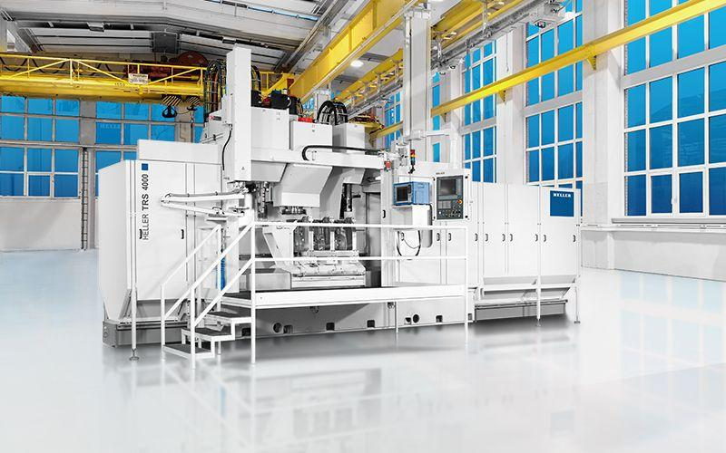
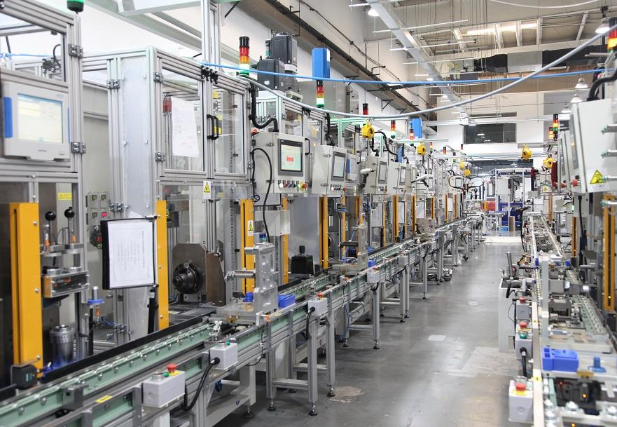
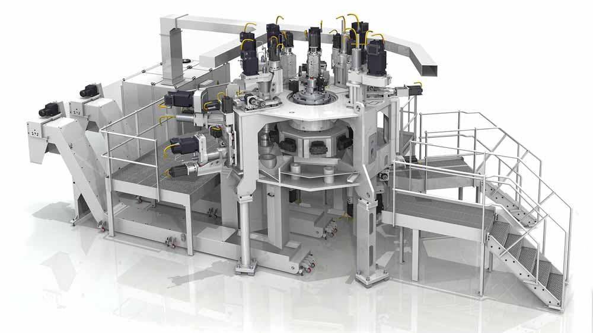
9
Definition: Fixed automation uses equipment and a production sequence designed primarily for a specific product or a narrowly defined operation.
The machine layout, tooling, mechanisms, and operating sequence are often dedicated to that task.
Example: High-volume production line
Suppose a machine is designed to perform these operations on a particular component:
Load → Clamp → Drill → Deburr → Unload
The machine repeats this sequence thousands of times.
If the company changes the component's geometry, hole locations, or dimensions, the machine may require substantial mechanical modification, new fixtures, tooling changes, or even replacement.
Main characteristics
- High production rate.
- Repetitive, consistent operations.
- High initial investment in dedicated equipment.
- Low flexibility for product changes.
- Economical when production volume is high and product variation is low.
- Changes may require mechanical, electrical, and control modifications.
Common examples
- Dedicated transfer lines.
- Special-purpose machines (SPMs).
- High-volume bottle-filling lines configured for one container format.
- Dedicated component assembly machines.
- Fixed mechanical handling and sorting systems.
Maintenance perspective
The machine may be highly optimized for one job, but a failure in a dedicated station can stop the entire production line.
Maintenance priorities include:
- Reducing breakdowns and cycle-time losses.
- Maintaining dedicated fixtures and tooling.
- Checking mechanical alignment and repeatability.
- Keeping critical special-purpose spares available.
- Preserving PLC sequences, drive parameters, and machine configurations.
Important: Fixed automation does not mean the machine cannot contain a PLC or be adjusted at all. It means the overall production system is primarily dedicated to a specific task.
2. Programmable Automation
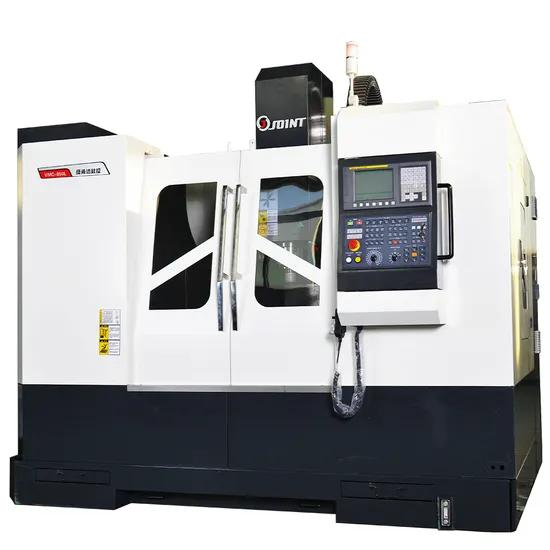
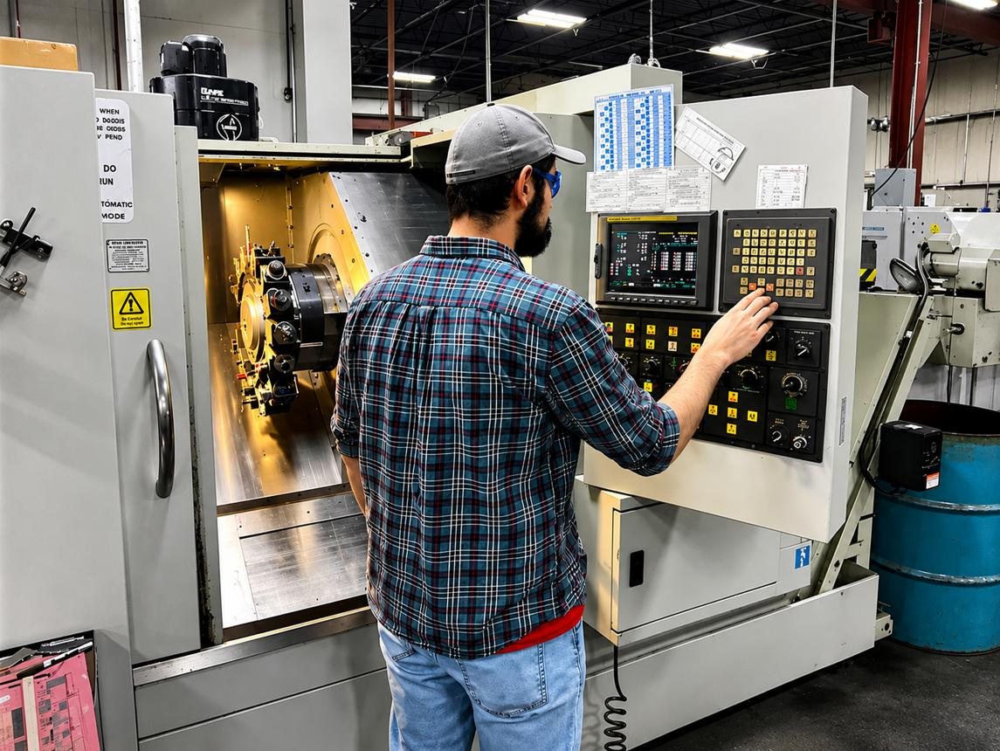
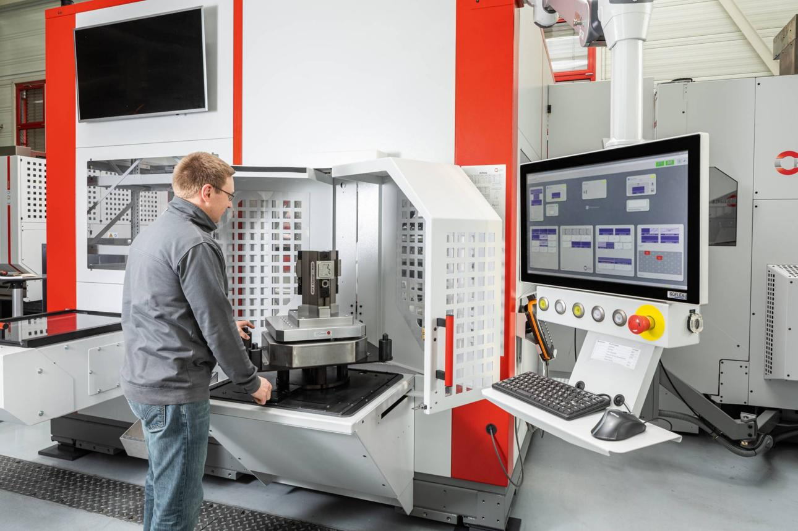
12
Definition: Programmable automation uses equipment whose operations can be changed by modifying the program, instructions, or operating parameters.
It is suitable when production occurs in batches and different products require different operating sequences.
Example: CNC machining
Suppose a CNC machine manufactures three component types:
- Component A requires drilling four holes.
- Component B requires milling a slot.
- Component C requires drilling and milling.
The same machine can manufacture these components by selecting the appropriate CNC program, provided the machine, tooling, workholding, and capabilities support the required operations.
Select Component A program
↓
Load and position component
↓
Execute CNC program
↓
Unload component
↓
Change program/setup
↓
Manufacture Component B
The machine is not necessarily redesigned for every product. Its operating instructions are changed instead.
Main characteristics
- Can manufacture different products or variants.
- Program changes are central to adapting operations.
- Changeover may require new tools, fixtures, materials, or setup.
- Production rate is generally lower than a comparable dedicated fixed system, although this depends on the application.
- Useful for batch production and changing product requirements.
- Requires reliable program management and configuration control.
Common examples
- CNC lathes and machining centers.
- Programmable packaging machines.
- PLC-controlled machines with selectable operating programs.
- Industrial robots reprogrammed for different tasks.
- Batch processing equipment using different recipes.
Maintenance and engineering perspective
When a machine stops working correctly after a program change, the problem may not be a hardware failure.
Check:
- Correct program selected.
- Correct program revision.
- Parameters and setpoints.
- Tool offsets and fixture configuration.
- PLC/CNC sequence.
- I/O mapping and interlocks.
- Program backups and change history.
For example, a CNC machine may be mechanically healthy but produce defective components because the wrong offset or program revision was loaded.
Important: Programmable automation does not necessarily change automatically between products. An operator may need to select the program, change tools, install a fixture, or perform other setup tasks.
3. Flexible Automation
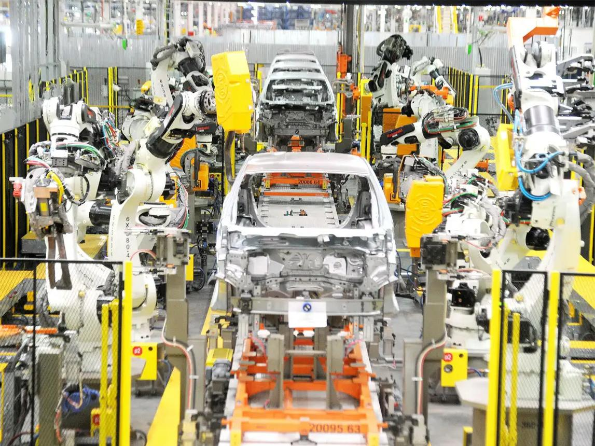
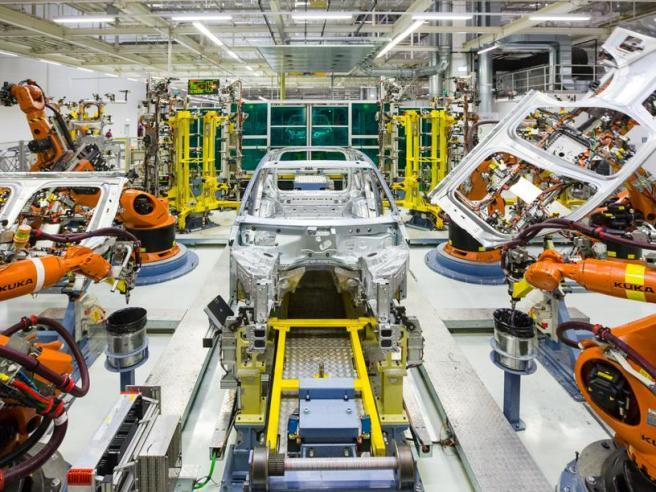
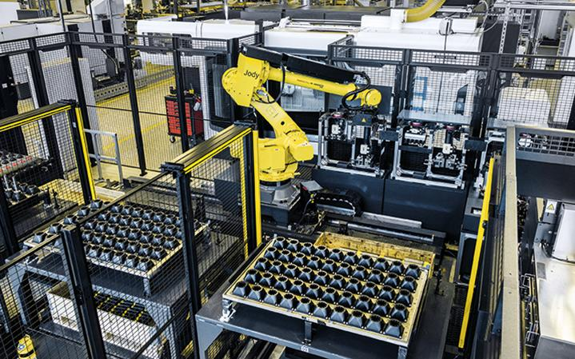
10
Definition: Flexible automation is designed to produce different products or variants with minimal manual intervention and little or no significant changeover between them.
The distinguishing feature is not simply that the machine can be programmed. It is that the overall system can adapt efficiently to product changes, often automatically.
Example: Automotive robotic welding line
Imagine a robotic welding cell that handles multiple vehicle body variants.
The production sequence could be:
Vehicle body arrives
↓
Identify model / variant
↓
Select required welding program
↓
Position correct fixture
↓
Execute welding sequence
↓
Verify process completion
↓
Release body
Depending on the system design, variant identification, program selection, fixture positioning, and process configuration may occur automatically.
The line can manufacture different approved variants without stopping for a major manual reconfiguration every time the model changes.
Main characteristics
- Handles multiple product types or variants.
- Product changes can be managed through programs, recipes, automatic tooling, or reconfigurable equipment.
- Low changeover time relative to the range of products supported.
- Often uses integrated controls, identification systems, robotics, CNC equipment, and automatic material handling.
- Requires more sophisticated coordination and configuration management.
- Can have higher initial investment and integration complexity.
Common examples
- Mixed-model automotive production lines.
- Robotic welding cells handling several body variants.
- Flexible manufacturing systems (FMS).
- CNC cells with automatic tool changers and pallet systems.
- Automated assembly systems with variant selection and automatic changeover.
Maintenance perspective
A flexible system can have more interacting subsystems, so faults may arise from coordination rather than from one failed device.
For example:
Vehicle identification
↓
Model code incorrect
↓
Wrong robot program selected
↓
Welding operation incorrect
Other potential faults include:
- Robot program and PLC recipe mismatch.
- Automatic fixture positioning failure.
- Barcode/RFID identification failure.
- Tool or pallet identification failure.
- Communication errors between controllers.
- Incorrect variant configuration.
- Failed handshakes between machines.
The engineering challenge is to ensure that the correct product identity, program, tooling, and process settings remain synchronized.
Important: Flexible automation does not mean that every product can be manufactured on the system. Flexibility is limited to the products, operations, and configurations the equipment was designed to support.
4. The Critical Difference: Programmable vs Flexible
This is where the concepts are easily confused.
Both programmable and flexible automation can manufacture multiple products. The difference is largely in how product changes are implemented and how much interruption they require.
| Feature | Programmable | Flexible |
|---|---|---|
| Product variety | Multiple products | Multiple products or variants |
| How changes happen | Program changes and setup | Often automatic program and configuration changes |
| Manual intervention | May be substantial | Generally minimized |
| Changeover | May require stopping for setup | Designed to minimize changeover |
| Production pattern | Often batch-oriented | Often mixed-model or varied production |
| Integration | Varies | Typically more integrated |
| Example | CNC machine requiring manual fixture changes | CNC cell with automatic pallet and program selection |
These are general tendencies, not absolute rules. A programmable machine can have excellent automatic changeover, and a flexible system can still require some manual intervention.
A system's classification depends on its overall design and operating method, not just the controller installed in it.
5. One Product, Three Automation Approaches
Consider manufacturing a metal bracket.
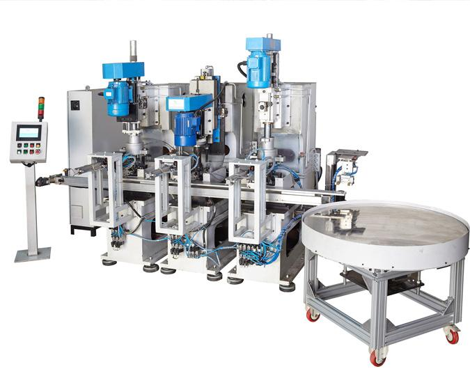
Fixed automation
A dedicated machine drills the same hole pattern into the bracket repeatedly. A new bracket design may require fixture, tooling, or mechanical changes.
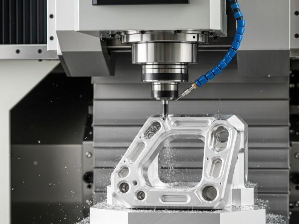
Programmable automation
A CNC machine manufactures different bracket designs by loading different programs and performing the required setup.
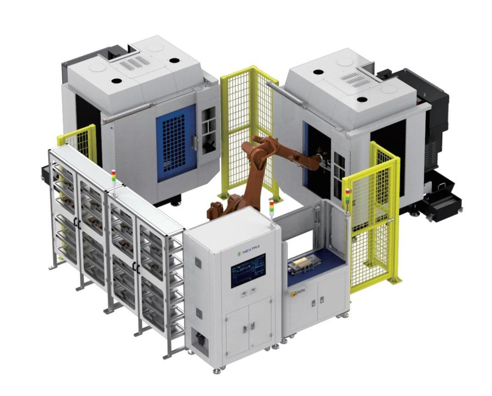
Flexible automation
An integrated machining cell identifies the bracket variant, selects the appropriate program and tooling configuration, and routes or positions the workpiece automatically where the system supports it.
The product is similar in all three examples. What changes is the system's ability to accommodate product variation.
6. Production Volume and Product Variety
A useful way to understand the business reason for these categories is to compare production volume against product variety.
| Automation type | Production volume | Product variety |
|---|---|---|
| Fixed | Usually high | Usually low |
| Programmable | Often low to medium, depending on setup and batch size | Multiple products, commonly in batches |
| Flexible | Often medium to high, with varying products | Multiple products or variants with limited changeover |
These ranges are illustrative, not strict definitions.
For example, a flexible automotive line may produce a high volume of vehicles while alternating between several variants. A programmable CNC machine may also run high volumes when the product remains unchanged for a long production run.
The economic trade-off
Fixed automation generally invests more in dedicated equipment to achieve high output at low recurring cost per unit.
Programmable automation accepts program and setup effort to accommodate product changes.
Flexible automation invests in integration and automatic changeover to reduce the time and labor associated with product variation.
The correct choice depends on:
- Annual production volume.
- Number of product variants.
- Frequency of product changes.
- Required cycle time.
- Cost of tooling and changeover.
- Product life cycle.
- Investment budget.
- Future product requirements.
7. Automation Flexibility Is Not the Same as PLC Programmability
This distinction matters in industrial maintenance.
Suppose a machine has a Siemens S7-1500 PLC. Its logic can be modified, so the machine is programmable at the control level.
But that does not automatically make the entire production system flexible.
Consider a machine with a permanently mounted fixture that accepts only one component.
Even if the PLC program can be changed, the machine may be unable to physically process a different component.
The overall flexibility depends on several factors:
- Mechanical flexibility: Can fixtures, tooling, and mechanisms accommodate different products?
- Control flexibility: Can programs and parameters be changed?
- Tooling flexibility: Can tools be changed or selected automatically?
- Material-handling flexibility: Can the system route different products?
- Identification flexibility: Can the system identify product variants correctly?
- Process flexibility: Can the equipment achieve the required conditions for each product?
A PLC is only one part of that picture. Software cannot magically give a machine a missing tool or a fixture that physically cannot hold the workpiece.
8. Examples from Automotive Manufacturing
| Application | Likely classification | Reason |
|---|---|---|
| Dedicated drilling SPM | Fixed | Designed around a specific operation |
| CNC machining center | Programmable | Different programs and setups support different parts |
| Robot welding cell with automatic variant selection | Flexible | Handles supported variants with limited manual changeover |
| Dedicated conveyor transfer line | Fixed | Predetermined route and operation |
| Robot manually re-taught for a new component | Programmable | New product requires reprogramming/setup |
| Mixed-model assembly line with automatic model identification | Flexible | Different variants are processed within the same system |
Actual classification depends on the implementation. A robot is not inherently flexible just because it has multiple programs; its fixtures, tools, material handling, and integration also matter.
9. How These Categories Relate to Discrete, Process, and Batch Automation
These are different ways of classifying automation.
The previous three topics described the type of production or control involved:
- Discrete automation: individual units, events, and sequences.
- Process automation: regulation of physical variables.
- Batch automation: production of a defined quantity using a recipe and procedure.
This topic describes how readily the automation system can adapt to changing production requirements.
For example, a system can be:
- Fixed and discrete: a dedicated component assembly machine.
- Programmable and discrete: a CNC machine producing different components.
- Flexible and discrete: a mixed-model robotic assembly cell.
- Programmable and batch-oriented: a mixing tank that runs different recipes after setup.
- Flexible and process-oriented: an integrated production system that changes among supported product recipes with automated reconfiguration.
These categories are not mutually exclusive. One describes the production/control approach; the other describes adaptability.
10. Maintenance and Retrofit Perspective
When evaluating an existing machine, ask what would be required to manufacture a different product.
Use this sequence:
Different product required
↓
Can existing mechanics handle it?
↓
Can tooling / fixtures accommodate it?
↓
Can the controller execute the required sequence?
↓
Can sensors and identification detect the variant?
↓
Can drives, robot programs and process settings support it?
↓
Can the system change configuration safely?
↓
What changeover time and validation are required?
This is particularly relevant when retrofitting older equipment.
A machine may be made more flexible by adding:
- Servo-controlled positioning.
- Programmable fixtures.
- Automatic tool or pallet changers.
- Product identification using barcode or RFID.
- Recipe or program selection.
- Standardized PLC interfaces.
- Robot integration.
- Better diagnostics and configuration management.
However, some machines remain mechanically constrained. A software retrofit alone may not justify the cost or achieve the required flexibility.
11. Common Interview Questions
Q1. What is fixed automation?
Automation designed primarily for a specific operation or product, typically offering high production rates but limited adaptability to product changes.
Q2. What is programmable automation?
Automation in which the operations can be changed by modifying programs or instructions, usually with setup or changeover between products.
Q3. What is flexible automation?
Automation designed to handle different supported products or variants with minimal changeover and manual intervention.
Q4. What is the main difference between programmable and flexible automation?
Programmable automation can be reprogrammed for different tasks, but may require significant setup or downtime. Flexible automation is designed to accommodate product changes with minimal interruption, often automatically.
Q5. Is a robot automatically a flexible automation system?
No. A robot may be reprogrammable, but the overall cell may still require manual fixture changes, tooling changes, or extensive reconfiguration.
Q6. Which type is best for mass production?
Fixed automation is often economical for very high-volume, low-variety production. Flexible automation may be preferable when high output must be combined with significant product variation.
Q7. Can PLC-controlled equipment be fixed automation?
Yes. A PLC can control a machine designed for one dedicated operation. The presence of a programmable controller does not determine the classification of the overall production system.
Q8. What factors determine the appropriate automation type?
Production volume, product variety, changeover frequency, required throughput, tooling, investment cost, and future product requirements.
12. Final Mental Model
Fixed automation
Dedicated operation
One main task, repeated efficiently.
Programmable automation
Change through programming and setup
Change the instructions to perform another supported task.
Flexible automation
Adapt through integrated, low-changeover operation
Produce different supported variants with minimal interruption.
Remember the central distinction:
Fixed = dedicated.
Programmable = reprogrammable, often with setup.
Flexible = adaptable with minimal changeover.
Your next topic in the study index is 08_Field → Field Level, which moves from classifying automation systems to understanding the physical devices that measure process conditions and perform actions in the plant.
data_to_be_added_to_notion.txt